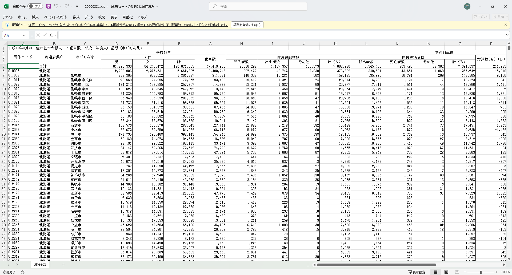

library(tidyverse)
library(here)
converter <- read_csv(here("data/240906_municipality_converter/municipality_converter_jp.csv"))市町村合併を反映させる
R
データ処理
古いデータに市町村合併を反映させる方法をご紹介します。
はじめに
市町村合併（平成の大合併）前のデータを使わなければならない場合に、うまく市町村コードを新使いながらパネルデータを作成する方法についてご紹介します。
この記事では近藤恵介先生（RIETI、神戸大学）が作成された市町村コンバーターを使用します。
以下のGitHubリポジトリよりダウンロードが可能です。
方法
コンバーターファイルのダウンロードと読み込み
GitHubリポジトリのdata_converter内にあるmunicipality_converter_jp.csvを開きます1。次のリンクから直接飛ぶことも可能です。
municipality_converter_jp.csvを開くと、コード右上にあるダウンロードアイコン2より任意の場所にダウンロードが可能です。
ダウンロードできたら、Rで読み込みます。
パネル化したいデータの準備
使用するデータ
今回使用するデータはこちらからダウンロードできます。
例えば人口データをパネル化したいとします。今回は例として、2000年から2005年の人口データ3を、2020年の市町村区分になるようにくっつけます。例なので、総人口のみを扱います。
今回使用するデータは次のようなファイルになっています。

まずはこれらのファイル（自分がパネル化したいデータがあればそれらのファイル）をRで読み込んでください。.xlsファイルであればreadxlパッケージのread_xls()を僕は使っています。以下は5年分まとめて読み込むときの例です。
library(readxl)
for (year in 2000:2005) {
obj <- read_xls(here(paste0("data/240906_municipality_converter/", year, "0331.xls")),
skip = 4) |>
select(1:3, 6)
colnames(obj) <- c("code", "prefecture", "municipality", "population")
obj <- obj |>
mutate(code = as.numeric(code) %/% 10)
assign(paste0("pop_", year), obj)
}forループやassign()についての説明は行いませんが、これで2000年から2005年までを一括で読み込むことができます。ポイントは、今回使用するコンバーターはキーとなるコードが整数かつ下1桁を落としているため、mutate(code = as.numeric(code) %/% 10)で処理しているところです。
とりあえずここで重要なことは、select()で必要な列のみ取り出しているのですが、団体コードと人口の列は必ず取り出すことです。市町村名も一応取り出していますが、別になくてもよいです。
2020年の自治体コードを付与
合併前のデータに、合併後の自治体コードを付与します。具体的には、人口データのcodeとコンバーターのmerge_id_muniをキーにしてleft_join()し、id_muni2020を付与します。
これもまとめて6年分やりたいので、先ほどのコードに追記します。
for (year in 2000:2005) {
obj <- read_xls(here(paste0("data/240906_municipality_converter/", year, "0331.xls")), skip = 4) |>
select(1:3, 6)
colnames(obj) <- c("code", "prefecture", "municipality", "population")
obj <- obj |>
mutate(code = as.numeric(code) %/% 10) |>
left_join(converter, by = c("code" = "merge_id_muni")) |>
select(code, prefecture, municipality, population, id_muni2020)
assign(paste0("pop_", year), obj)
}試しにpop_2020の変数名をcolnames(pop_2020)などで確認してみると、code, prefecture, municipality, population, id_muni2020となっていることがわかります。
id_muni2020を使ってサマライズ
例えばB市とC市がA市に合併した場合、Aはもとから2020年基準の自治体コードを持っていますが、B市とC市は古い自治体コードを持っていて、新しく2020年の自治体コードを付与されています。
すなわち、id_muni2020の列を見ると、A市と同じ自治体コードをB市とC市は持っていることになります。
これを使うと、各自治体コードで人口を足し算すれば、現在の自治体区分における人口総数を算出することができます。これを実行するのがsummarise()関数です。
for (year in 2000:2005) {
df <- get(paste0("pop_", year))
summarised_df <- df |>
summarise(population = sum(population, na.rm = TRUE),
.by = id_muni2020)
assign(paste0("summarised_pop_", year), summarised_df)
}forループの中でデータフレーム名を取得するのは少々ややこしいですが、以上のような書き方で可能です。
summarise()内では.byで指定したid_muni2020ごとにpopulationをsum()するようになっています。na.rm = TRUEは、NAがあった場合に計算結果がNAにならないようにするために必要です。
以上を実行すると、summarised_pop_2000～summarised_pop_2005までが出来上がります。
ちなみにここで使っている変数がid_muni2020とpopulationだけなので、出来上がったデータフレームもこの2つの変数しか入っていません。市町村名も残したい場合は、.byでprefectureとmunicipalityも追加で指定すれば残すことができます。
left_join()でくっつける
# ベースとなるデータフレームを作っておく
final_df <- summarised_pop_2000 |>
rename(population_2000 = population)
for (year in 2001:2005) {
df_to_join <- get(paste0("summarised_pop_", year)) |>
rename_with(~ paste0(., "_", year), population)
final_df <- left_join(final_df, df_to_join,
by = c("id_muni2020"))
}populationの列が複数出てくるので、それらの後が_20xxとなるようにrename_with()で設定しています。
以上の作業で合併前のデータを最新の市町村区分を基準として結合することができました。
これを応用して変数を追加したりロング形式に変換することが可能です。
まとめ
今回紹介したコードをまとめると以下の通りです。
for (year in 2000:2005) {
obj <- read_xls(here(paste0("data/240906_municipality_converter/", year, "0331.xls")), skip = 4) |>
select(1:3, 6)
colnames(obj) <- c("code", "prefecture", "municipality", "population")
obj <- obj |>
mutate(code = as.numeric(code) %/% 10) |>
left_join(converter, by = c("code" = "merge_id_muni")) |>
select(code, prefecture, municipality, population, id_muni2020)
assign(paste0("pop_", year), obj)
}
for (year in 2000:2005) {
df <- get(paste0("pop_", year))
summarised_df <- df |>
summarise(population = sum(population, na.rm = TRUE),
.by = id_muni2020)
assign(paste0("summarised_pop_", year), summarised_df)
}
final_df <- summarised_pop_2000 |>
rename(population_2000 = population)
for (year in 2001:2005) {
df_to_join <- get(paste0("summarised_pop_", year)) |>
rename_with(~ paste0(., "_", year), population)
final_df <- left_join(final_df, df_to_join,
by = c("id_muni2020"))
}さらに1つのコードで完結させる場合は次のようになります。
for (year in 2000:2005) {
obj <- read_xls(here(paste0("data/240906_municipality_converter/", year, "0331.xls")), skip = 4) |>
select(1:3, 6)
colnames(obj) <- c("code", "prefecture", "municipality", "population")
summarised_df <- obj |>
mutate(code = as.numeric(code) %/% 10) |>
left_join(converter, by = c("code" = "merge_id_muni")) |>
select(code, prefecture, municipality, population, id_muni2020) |>
summarise(population = sum(population, na.rm = TRUE), .by = id_muni2020)
if (year == 2000) {
final_df <- summarised_df |>
rename(population_2000 = population)
} else {
summarised_df <- summarised_df |>
rename_with(~ paste0("population_", year), population)
final_df <- left_join(final_df, summarised_df, by = "id_muni2020")
}
}以上です。合併処理はめんどくさいので、少しでもお役に立てれば幸いです。